- 00 开篇词 这样入门Go，才能少走弯路.md.html
- 01 前世今生：你不得不了解的Go的历史和现状.md.html
- 02 拒绝“Hello and Bye”：Go语言的设计哲学是怎么一回事？.md.html
- 03 配好环境：选择一种最适合你的Go安装方法.md.html
- 04 初窥门径：一个Go程序的结构是怎样的？.md.html
- 05 标准先行：Go项目的布局标准是什么？.md.html
- 06 构建模式：Go是怎么解决包依赖管理问题的？.md.html
- 07 构建模式：Go Module的6类常规操作.md.html
- 08 入口函数与包初始化：搞清Go程序的执行次序.md.html
- 09 即学即练：构建一个Web服务就是这么简单.md.html
- 10 变量声明：静态语言有别于动态语言的重要特征.md.html
- 11 代码块与作用域：如何保证变量不会被遮蔽？.md.html
- 12 基本数据类型：Go原生支持的数值类型有哪些？.md.html
- 13 基本数据类型：为什么Go要原生支持字符串类型？.md.html
- 14 常量：Go在“常量”设计上的创新有哪些？.md.html
- 15 同构复合类型：从定长数组到变长切片.md.html
- 16 复合数据类型：原生map类型的实现机制是怎样的？.md.html
- 17 复合数据类型：用结构体建立对真实世界的抽象.md.html
- 18 控制结构：if的“快乐路径”原则.md.html
- 19 控制结构：Go的for循环，仅此一种.md.html
- 20 控制结构：Go中的switch语句有哪些变化？.md.html
- 21 函数：请叫我“一等公民”.md.html
- 22 函数：怎么结合多返回值进行错误处理？.md.html
- 23 函数：怎么让函数更简洁健壮？.md.html
- 24 方法：理解“方法”的本质.md.html
- 25 方法：方法集合与如何选择receiver类型？.md.html
- 26 方法：如何用类型嵌入模拟实现“继承”？.md.html
- 27 即学即练：跟踪函数调用链，理解代码更直观.md.html
- 28 接口：接口即契约.md.html
- 29 接口：为什么nil接口不等于nil？.md.html
- 30 接口：Go中最强大的魔法.md.html
- 31 并发：Go的并发方案实现方案是怎样的？.md.html
- 32 并发：聊聊Goroutine调度器的原理.md.html
- 33 并发：小channel中蕴含大智慧.md.html
- 34 并发：如何使用共享变量？.md.html
- 35 即学即练：如何实现一个轻量级线程池？.md.html
- 36 打稳根基：怎么实现一个TCP服务器？（上）.md.html
- 37 代码操练：怎么实现一个TCP服务器？（中）.md.html
- 38 成果优化：怎么实现一个TCP服务器？（下）.md.html
- 39 驯服泛型：了解类型参数.md.html
- 40 驯服泛型：定义泛型约束.md.html
- 41 驯服泛型：明确使用时机.md.html
- 元旦快乐 这是一份暂时停更的声明.md.html
- 加餐 作为Go Module的作者，你应该知道的几件事.md.html
- 加餐 如何拉取私有的Go Module？.md.html
- 加餐 我“私藏”的那些优质且权威的Go语言学习资料.md.html
- 加餐 聊聊Go 1.17版本的那些新特性.md.html
- 加餐 聊聊Go语言的指针.md.html
- 加餐 聊聊最近大热的Go泛型.md.html
- 大咖助阵 叶剑峰：Go语言中常用的那些代码优化点.md.html
- 大咖助阵 大明：Go泛型，泛了，但没有完全泛.md.html
- 大咖助阵 孔令飞：从小白到“老鸟”，我的Go语言进阶之路.md.html
- 大咖助阵 徐祥曦：从销售到分布式存储工程师，我与 Go 的故事.md.html
- 大咖助阵 曹春晖：聊聊 Go 语言的 GC 实现.md.html
- 大咖助阵 海纳：聊聊语言中的类型系统与泛型.md.html
- 期中测试 一起检验下你的学习成果吧.md.html
- 用户故事 罗杰：我的Go语言学习之路.md.html
- 结束语 和你一起迎接Go的黄金十年.md.html
- 结课测试 快来检验下你的学习成果吧！.md.html
- 捐赠
38 成果优化：怎么实现一个TCP服务器？（下）
你好，我是Tony Bai。
在上一讲中，我们初步实现了一个基于TCP的自定义应用层协议的通信服务端。对于一个常驻内存的服务端而言，更高的性能以及更低的资源消耗，始终是后端开发人员的追求。同时，更高性能的服务程序，也意味着在处理相同数量访问请求的前提下，我们使用的机器数量更少，这可是为公司节省真金白银的有效策略。
而且，Go语言最初设计时就被定位为“系统级编程语言”，这说明高性能也一直是Go核心团队的目标之一。很多来自动态类型语言的开发者转到Go语言，几乎都有着性能方面的考量。
所以，在实战篇的最后一讲，我们就结合上一讲实现的自定义应用层协议的通信服务端，看看优化Go程序使用的常用工具与套路，给你引引路。
Go程序优化的基本套路
Go程序的优化，也有着固定的套路可循，这里我将它整理成了这张示意图：
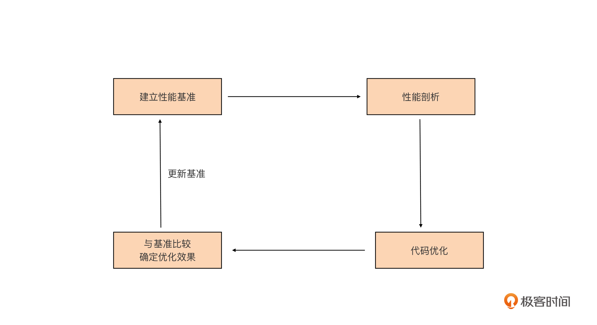
这张图也不难理解，我简单解释一下。
首先我们要建立性能基准。要想对程序实施优化，我们首先要有一个初始“参照物”，这样我们才能在执行优化措施后，检验优化措施是否有效，所以这是优化循环的第一步。
第二步是性能剖析。要想优化程序，我们首先要找到可能影响程序性能的“瓶颈点”，这一步的任务，就是通过各种工具和方法找到这些“瓶颈点”。
第三步是代码优化。我们要针对上一步找到的“瓶颈点”进行分析，找出它们成为瓶颈的原因，并有针对性地实施优化。
第四步是与基准比较，确定优化效果。这一步，我们会采集优化后的程序的性能数据，与第一步的性能基准进行比较，看执行上述的优化措施后，是否提升了程序的性能。
如果有提升，那就说明这一轮的优化是有效的。如果优化后的性能指标仍然没有达到预期，可以再执行一轮优化，这时我们就要用新的程序的性能指标作为新的性能基准，作为下一轮性能优化参考。
接下来我们就围绕这个优化循环，看看怎么对我们上一讲实现的自定义应用层协议的通信服务端进行优化。首先我们要做的是建立性能基准，这是Go应用性能优化的基础与前提。
建立性能基准
上一讲，我们已经初步实现了自定义应用层协议的通信服务端，那它的性能如何呢？
我们肯定不能拍脑门说这个程序性能很好、一般或很差吧？我们需要用数据说话，也就是为我们的Go程序建立性能基准。通过这个性能基准，我们不仅可以了解当前程序的性能水平，也可以据此判断后面的代码优化措施有没有起到效果。
建立性能基准的方式大概有两种，一种是通过编写Go原生提供的性能基准测试（benchmark test）用例来实现，这相当于对程序的局部热点建立性能基准，常用于一些算法或数据结构的实现，比如分布式全局唯一ID生成算法、树的插入/查找等。
另外一种是基于度量指标为程序建立起图形化的性能基准，这种方式适合针对程序的整体建立性能基准。而我们的自定义协议服务端程序就十分适合用这种方式，接下来我们就来看一下基于度量指标建立基准的一种可行方案。
建立观测设施
这些年，基于Web的可视化工具、开源监控系统以及时序数据库的兴起，给我们建立性能基准带来了很大的便利，业界有比较多成熟的工具组合可以直接使用。但业界最常用的还是Prometheus+Grafana的组合，这也是我日常使用比较多的组合，所以在这里我也使用这个工具组合来为我们的程序建立性能指标观测设施。
以Docker为代表的轻量级容器（container）的兴起，让这些工具的部署、安装都变得十分简单，这里我们就使用docker-compose工具，基于容器安装Prometheus+Grafana的组合。
我建议你使用一台Linux主机来安装这些工具，因为docker以及docker-compose工具，在Linux平台上的表现最为成熟稳定。我这里不再详细说明docker与docker-compose工具的安装方法了，你可以参考docker安装教程以及docker-compose安装教程自行在Linux上安装这两个工具。
这里我简单描述一下安装Prometheus+Grafana的组合的步骤。
首先，我们要在Linux主机上建立一个目录monitor，这个目录下，我们创建docker-compose.yml文件，它的内容是这样的：
version: "3.2"
services:
prometheus:
container_name: prometheus
image: prom/prometheus:latest
network_mode: "host"
volumes:
- ./conf/tcp-server-prometheus.yml:/etc/prometheus/prometheus.yml
- /etc/localtime:/etc/localtime
restart: on-failure
grafana:
container_name: grafana
image: grafana/grafana:latest
network_mode: "host"
restart: on-failure
volumes:
- /etc/localtime:/etc/localtime
- ./data/grafana:/var/lib/grafana
# linux node_exporter
node_exporter:
image: quay.io/prometheus/node-exporter:latest
restart: always
container_name: node_exporter
command:
- '--path.rootfs=/host'
network_mode: host
pid: host
volumes:
- '/:/host:ro,rslave'
docker-compose.yml是docker-compose工具的配置文件，基于这个配置文件，docker-compose工具会拉取对应容器镜像文件，并在本地启动对应的容器。
我们这个docker-compose.yml文件中包含了三个工具镜像，分别是Prometheus、Grafana与node-exporter。其中，node-exporter是prometheus开源的主机度量数据的采集工具，通过node exporter，我们可以采集到主机的CPU、内存、磁盘、网络I/O等主机运行状态数据。结合这些数据，我们可以查看我们的应用在运行时的系统资源占用情况。
docker-compose.yml中Prometheus容器挂载的tcp-server-prometheus.yml文件放在了monitor/conf下面，它的内容是这样：
global:
scrape_interval: 5s # Set the scrape interval to every 15 seconds. Default is every 1 minute.
evaluation_interval: 15s # Evaluate rules every 15 seconds. The default is every 1 minute.
# scrape_timeout is set to the global default (10s).
# Alertmanager configuration
alerting:
alertmanagers:
- static_configs:
- targets:
# - alertmanager:9093
# Load rules once and periodically evaluate them according to the global 'evaluation_interval'.
rule_files:
# - "first_rules.yml"
# - "second_rules.yml"
# A scrape configuration containing exactly one endpoint to scrape:
# Here it's Prometheus itself.
scrape_configs:
# The job name is added as a label `job=<job_name>` to any timeseries scraped from this config.
- job_name: "prometheus"
# metrics_path defaults to '/metrics'
# scheme defaults to 'http'.
static_configs:
- targets: ["localhost:9090"]
- job_name: "tcp-server"
static_configs:
- targets: ["localhost:8889"]
- job_name: "node"
static_configs:
- targets: ["localhost:9100"]
我们看到，在上面Prometheus的配置文件的scrpae_configs下面，配置了三个采集job，分别用于采集Prometheus自身度量数据、我们的tcp server的度量数据，以及node-exporter的度量数据。
grafana容器会挂载本地的data/grafana路径到容器中，为了避免访问权限带来的问题，我们在创建data/grafana目录后，最好再为这个目录赋予足够的访问权限，比如：
$chmod -R 777 data
运行下面命令，docker-compose就会自动拉取镜像，并启动docker-compose.yml中的三个容器：
$docker-compose -f docker-compose.yml up -d
等待一段时间后，执行docker ps命令，如果你能看到下面三个正在运行的容器，就说明我们的安装就成功了：
$docker ps
CONTAINER ID IMAGE COMMAND CREATED STATUS PORTS NAMES
563d655cdf90 grafana/grafana:latest "/run.sh" 26 hours ago Up 26 hours grafana
65616d1b6d1a prom/prometheus:latest "/bin/prometheus --c…" 26 hours ago Up 26 hours prometheus
b29d3fef8572 quay.io/prometheus/node-exporter:latest "/bin/node_exporter …" 26 hours ago Up 26 hours node_exporter
为了更直观地了解到整个观测设施中各个工具之间的关系，我这里画了一幅示意图，对照着这幅图，你再来理解上面的配置与执行步骤会容易许多：
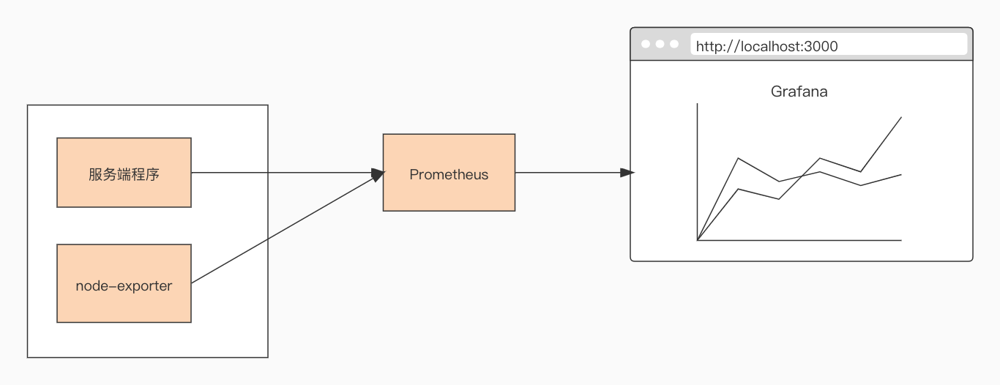
配置Grafana
一旦成功启动，Prometheus便会启动各个采集job，从tcp server以及node-exporter中拉取度量数据，并存储在其时序数据库中，这个时候我们需要对Grafana进行一些简单配置，才能让这些数据以图形化的方式展现出来。
我们首先需要为Grafana配置一个新的数据源（data source），在数据源选择页面，我们选择Prometheus，就像下图这样：
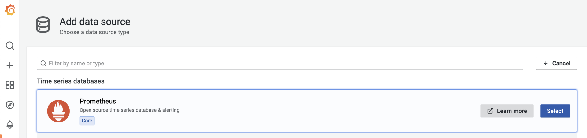
选择后，在Prometheus数据源配置页面，配置这个数据源的HTTP URL就可以了。如果你点击“Save & test”按钮后提示成功，那么数据源就配置好了。
接下来，我们再添加一个node-exporter仪表板（dashboard），把从node-exporter拉取的度量数据以图形化方式展示出来。这个时候我们不需要手工一个一个设置仪表板上的panel，Grafana官方有现成的node-exporter仪表板可用，我们只需要在grafana的import页面中输入相应的dashboard ID，就可以导入相关仪表板的设置：
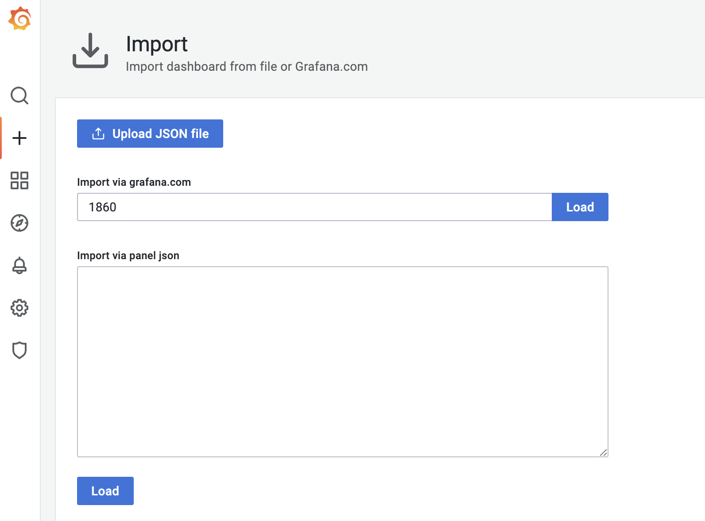
这里，我们使用的是ID为1860的node-exporter仪表板，导入成功后，进入这个仪表板页面，等待一段时间后，我们就可以看到类似下面的可视化结果：
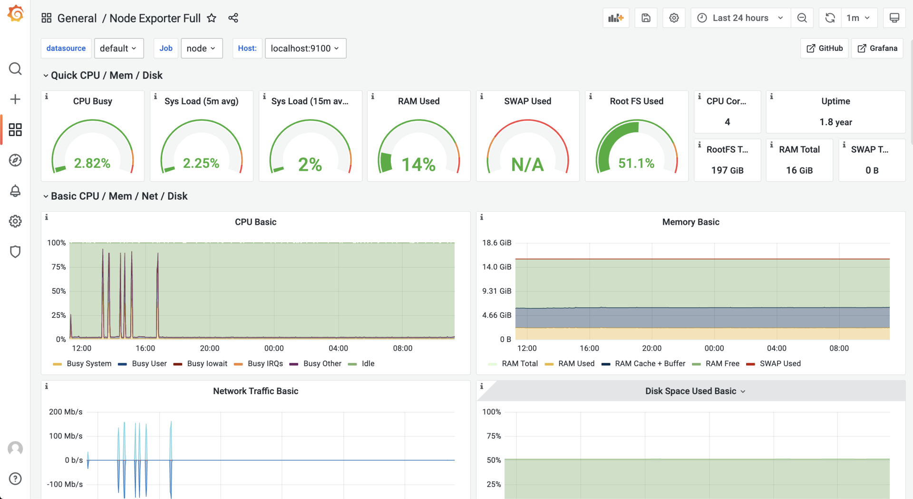
好了，到这里node-exporter的度量数据，已经可以以图形化的形式呈现在我们面前了，那么我们的自定义协议的服务端的数据又如何采集与呈现呢？我们继续向下看。
在服务端埋入度量数据采集点
前面说了，我们要建立服务端的性能基准，那么哪些度量数据能反映出服务端的性能指标呢？这里我们定义三个度量数据项：
- 当前已连接的客户端数量（client_connected）；
- 每秒接收消息请求的数量（req_recv_rate）；
- 每秒发送消息响应的数量（rsp_send_rate）。
那么如何在服务端的代码中埋入这三个度量数据项呢？
我们将上一讲的tcp-server-demo1项目拷贝一份，形成tcp-server-demo2项目，我们要在tcp-server-demo2项目中实现这三个度量数据项的采集。
我们在tcp-server-demo2下，创建新的metrics包负责定义度量数据项，metrics包的源码如下：
// tcp-server-demo2/metrics/metrics.go
package metrics
import (
"fmt"
"net/http"
"github.com/prometheus/client_golang/prometheus"
"github.com/prometheus/client_golang/prometheus/promhttp"
)
var (
ClientConnected prometheus.Gauge
ReqRecvTotal prometheus.Counter
RspSendTotal prometheus.Counter
)
func init() {
ReqRecvTotal = prometheus.NewCounter(prometheus.CounterOpts{
Name: "tcp_server_demo2_req_recv_total",
})
RspSendTotal = prometheus.NewCounter(prometheus.CounterOpts{
Name: "tcp_server_demo2_rsp_send_total",
})
ClientConnected = prometheus.NewGauge(prometheus.GaugeOpts{
Name: "tcp_server_demo2_client_connected",
})
prometheus.MustRegister(ReqRecvTotal, RspSendTotal, ClientConnected)
// start the metrics server
metricsServer := &http.Server{
Addr: fmt.Sprintf(":%d", metricsHTTPPort),
}
mu := http.NewServeMux()
mu.Handle("/metrics", promhttp.Handler())
metricsServer.Handler = mu
go func() {
err := metricsServer.ListenAndServe()
if err != nil {
fmt.Println("prometheus-exporter http server start failed:", err)
}
}()
fmt.Println("metrics server start ok(*:8889)")
}
在这段代码中，我们使用prometheus提供的go client包中的类型定义了三个度量数据项。其中ClientConnected的类型为prometheus.Gauge，Gauge是对一个数值的即时测量值，它反映一个值的瞬时快照；而ReqRecvTotal和RspSendTotal的类型都为prometheus.Counter。
Counter顾名思义，就是一个计数器，可以累加，也可以减少。不过要想反映我们预期的每秒处理能力的指标，我们还需要将这两个计数器与rate函数一起使用才行，这个我们稍后再说。
我们在metrics包的init函数中启动了一个http server，这个server监听8889端口，还记得我们前面prometheus配置文件中tcp-server job采集的目标地址吗？正是这个8889端口。也就是说，Prometheus定期从8889端口拉取我们的度量数据项的值。
有了metrics包以及度量数据项后，我们还需要将度量数据项埋到服务端的处理流程中，我们来看对main包的改造：
// tcp-server-demo2/cmd/server/main.go
func handleConn(c net.Conn) {
metrics.ClientConnected.Inc() // 连接建立，ClientConnected加1
defer func() {
metrics.ClientConnected.Dec() // 连接断开，ClientConnected减1
c.Close()
}()
frameCodec := frame.NewMyFrameCodec()
for {
// read from the connection
// decode the frame to get the payload
// the payload is undecoded packet
framePayload, err := frameCodec.Decode(c)
if err != nil {
fmt.Println("handleConn: frame decode error:", err)
return
}
metrics.ReqRecvTotal.Add(1) // 收到并解码一个消息请求，ReqRecvTotal消息计数器加1
// do something with the packet
ackFramePayload, err := handlePacket(framePayload)
if err != nil {
fmt.Println("handleConn: handle packet error:", err)
return
}
// write ack frame to the connection
err = frameCodec.Encode(c, ackFramePayload)
if err != nil {
fmt.Println("handleConn: frame encode error:", err)
return
}
metrics.RspSendTotal.Add(1) // 返回响应后，RspSendTotal消息计数器减1
}
}
你可以看到，我们在每个连接的处理主函数handleConn中都埋入了各个度量数据项，并在特定事件发生时修改度量数据的值。
服务端建立完度量数据项后，我们还需要在Grafana中建立对应的仪表板来展示这些度量数据项，这一次，我们就需要手动创建仪表板tcp-server-demo，并为仪表板手动添加panel了。
我们建立三个panel：req_recv_rate、rsp_send_rate和client_connected，如下图所示：
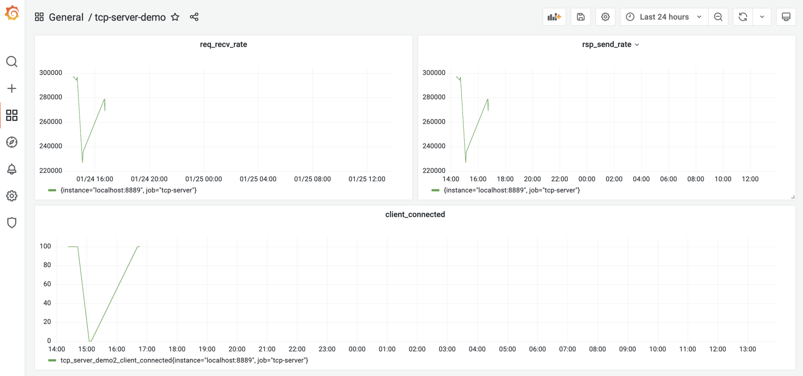
client_connected panel比较简单，我们直接取tcp_server_demo2_client_connected这个注册到prometheus中的度量项的值就可以了。
而req_recv_rate和rsp_send_rate就要结合度量项的值与rate函数来实现。以req_recv_rate这个panel为例，它的panel配置是这样：
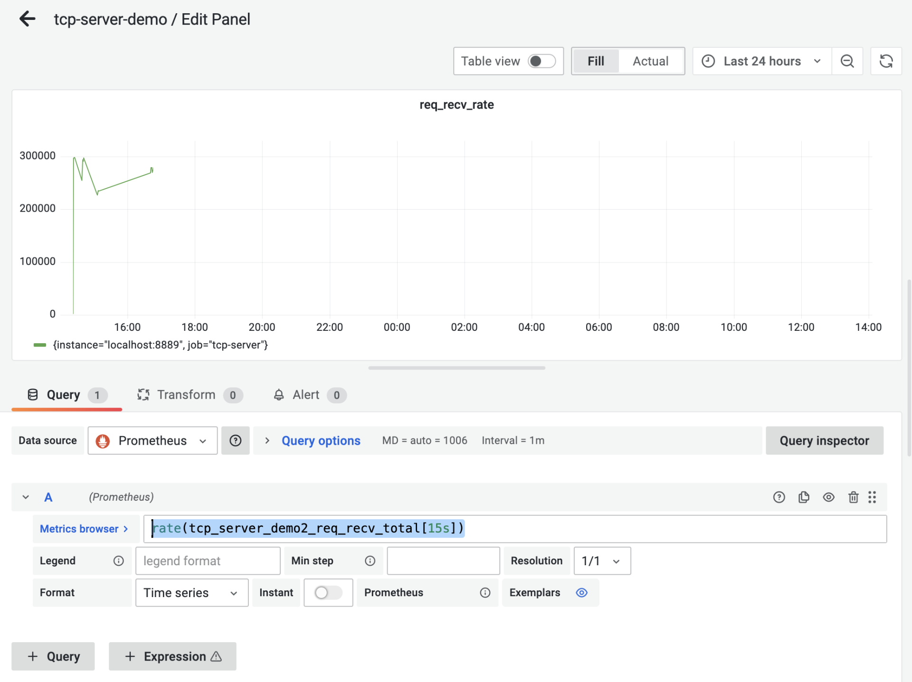
我们看到图中的Metrics Browser后面的表达式是：rate(tcp_server_demo2_req_recv_total[15s])，这个表达式返回的是在15秒内测得的req_recv_total的每秒速率，这恰恰是可以反映我们的服务端处理性能的指标。
好了，到这里，支持输出度量数据指标的服务端以及对应的grafana仪表板都准备好了。下面我们就来为服务端建立第一版的性能基准。
第一版性能基准
要建立性能基准，我们还需要一个可以对服务端程序“施加压力”的客户端模拟器，我们可以基于tcp-server-demo1/cmd/client实现这个模拟器。
新版模拟器的原理与tcp-server-demo1/cmd/client基本一致，所以具体的改造过程我这里就不多说了，新版模拟器的代码，我放在了tcp-server-demo2/cmd/client下面，你可以自行查看源码。
建立以及使用性能基准的前提，是服务端的压测的硬件条件要尽量保持一致，以保证得到的结果受外界干扰较少，性能基准才更有参考意义。我们在一个4核8G的Centos Linux主机上跑这个压力测试，后续的压测也是在同样的条件下。
压测的步骤很简单，首先在tcp-server-demo2下构建出server与client两个可执行程序。然后先启动server，再启动client。运行几分钟后，停掉程序就可以了，这时，我们在grafana的tcp-server的仪表板中，就能看到类似下面的图形化数据展示了：
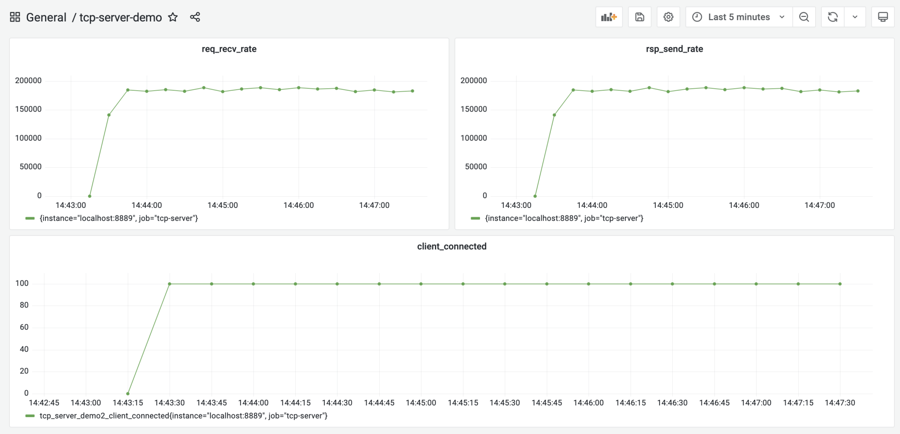
从这张图中，我们大约看到服务端的处理性能大约在18.5w/秒左右，我们就将这个结果作为服务端的第一个性能基准。
尝试用pprof剖析
按照这一讲开头的Go应用性能优化循环的思路，我们接下来就应该尝试对我们的服务端做性能剖析，识别出瓶颈点。
Go是“自带电池”（battery included）的语言，拥有着让其他主流语言羡慕的工具链，Go同样也内置了对Go代码进行性能剖析的工具：pprof。
pprof源自Google Perf Tools工具套件，在Go发布早期就被集成到Go工具链中了，所以pprof也是Gopher最常用的、对Go应用进行性能剖析的工具。这里我们也使用这一工具对我们的服务端程序进行剖析。
Go应用支持pprof性能剖析的方式有多种，最受Gopher青睐的是通过导入net/http/pprof包的方式。我们改造一下tcp-server-demo2，让它通过这种方式支持pprof性能剖析。
改造后的代码放在tcp-server-demo2-with-pprof目录下，下面是支持pprof的main包的代码节选：
// tcp-server-demo2-with-pprof/cmd/server/main.go
import (
... ...
"net/http"
_ "net/http/pprof"
... ...
)
... ...
func main() {
go func() {
http.ListenAndServe(":6060", nil)
}()
... ...
}
从这个代码变更可以看到，我们只需要以空导入的方式导入net/http/pprof包，并在一个单独的goroutine中启动一个标准的http服务，就可以实现对pprof性能剖析的支持。pprof工具可以通过6060端口采样到我们的Go程序的运行时数据。
接下来，我们就来进行性能剖析数据的采集。我们编译tcp-server-demo2-with-pprof目录下的server与client，先后启动server与client，让client对server保持持续的压力。
然后我们在自己的开发机上执行下面命令：
// 192.168.10.18为服务端的主机地址
$go tool pprof -http=:9090 http://192.168.10.18:6060/debug/pprof/profile
Fetching profile over HTTP from http://192.168.10.18:6060/debug/pprof/profile
Saved profile in /Users/tonybai/pprof/pprof.server.samples.cpu.004.pb.gz
Serving web UI on http://localhost:9090
go tool pprof命令默认会从http://192.168.10.18:6060/debug/pprof/profile服务上，采集CPU类型的性能剖析数据，然后打开本地浏览器，默认显示如下页面：
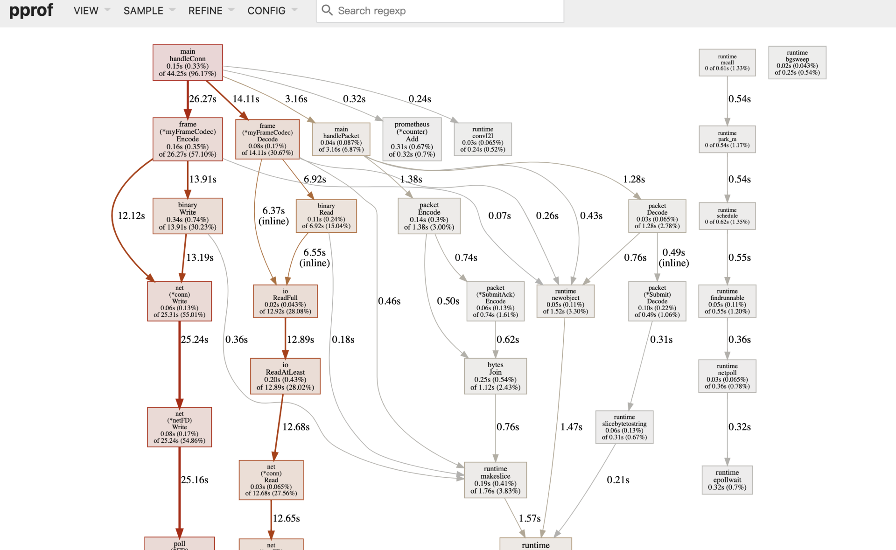
debug/pprof/profile提供的是CPU的性能采样数据。CPU类型采样数据是性能剖析中最常见的采样数据类型。
一旦启用CPU数据采样，Go运行时会每隔一段短暂的时间（10ms）就中断一次（由SIGPROF信号引发），并记录当前所有goroutine的函数栈信息。它能帮助我们识别出代码关键路径上出现次数最多的函数，而往往这个函数就是程序的一个瓶颈。上图我们沿着粗红线向下看，我们会看到下面图中的信息：
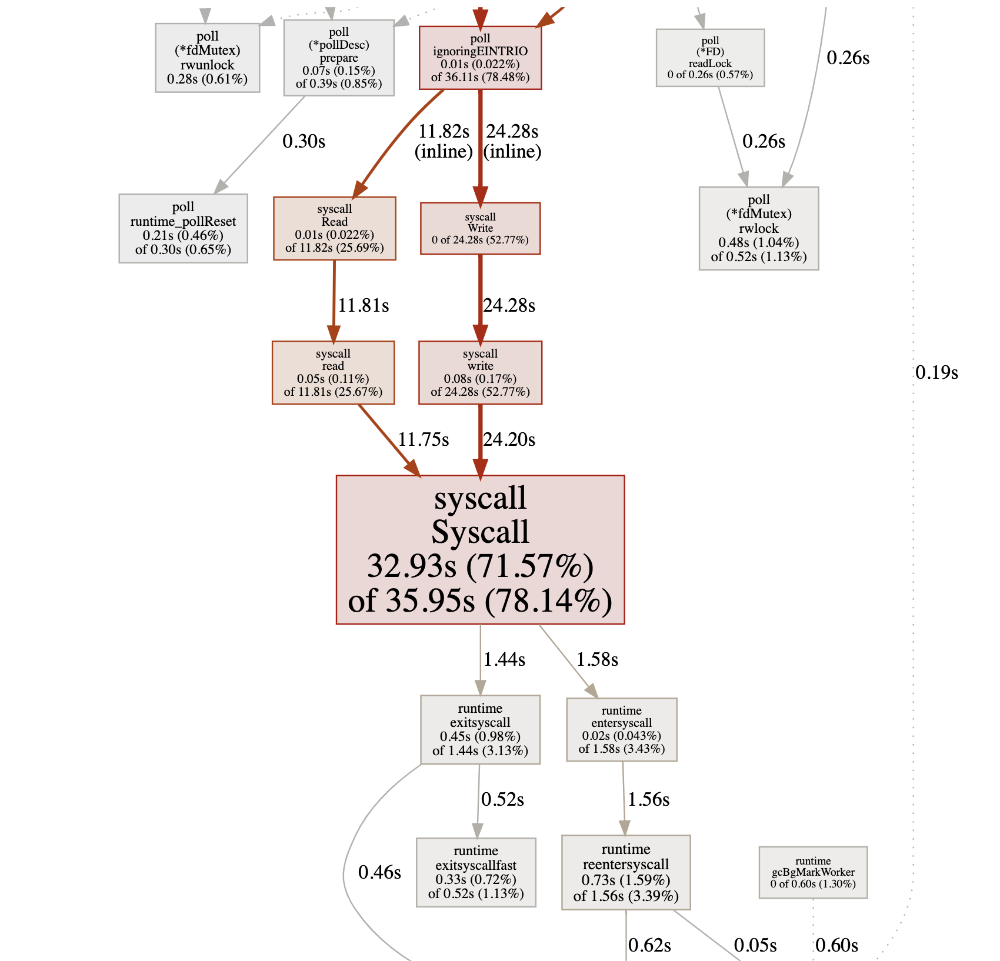
我们看到图中间的Syscall函数占据了一个最大的方框，并用黑体标记了出来，这就是我们程序的第一个瓶颈：花费太多时间在系统调用上了。在向上寻找，我们发现Syscall的调用者基本都是网络read和write导致的。
代码优化
好了，第一个瓶颈点已经找到！我们该进入优化循环的第三个环节：代码优化了。那么该如何优化代码呢？我们可以分为两个部分来看。
带缓存的网络I/O
为什么网络read和write导致的Syscall会那么多呢？我们回顾一下第一版服务端的实现。
我们看到，在handleConn函数中，我们直接将net.Conn实例传给frame.Decode作为io.Reader参数的实参，这样，我们每次调用Read方法都是直接从net.Conn中读取数据，而Read将转变为一次系统调用（Syscall），哪怕是仅仅读取一个字节也是如此。因此，我们的优化目标是降低net.Conn的Write和Read的频率。
那么如何降低net.Conn的读写频率呢？增加缓存不失为一个有效的方法。而且，我们的服务端采用的是一个goroutine处理一个客户端连接的方式，由于没有竞态，这个模型更适合在读写net.Conn时使用带缓存的方式。
所以，下面我们就来为tcp-server-demo2增加net.Conn的缓存读与缓存写。优化后的代码我放在了tcp-server-demo3下：
// tcp-server-demo3/cmd/server/main.go
func handleConn(c net.Conn) {
metrics.ClientConnected.Inc()
defer func() {
metrics.ClientConnected.Dec()
c.Close()
}()
frameCodec := frame.NewMyFrameCodec()
rbuf := bufio.NewReader(c)
wbuf := bufio.NewWriter(c)
defer wbuf.Flush()
for {
// read from the connection
// decode the frame to get the payload
// the payload is undecoded packet
framePayload, err := frameCodec.Decode(rbuf)
if err != nil {
fmt.Println("handleConn: frame decode error:", err)
return
}
metrics.ReqRecvTotal.Add(1)
// do something with the packet
ackFramePayload, err := handlePacket(framePayload)
if err != nil {
fmt.Println("handleConn: handle packet error:", err)
return
}
// write ack frame to the connection
err = frameCodec.Encode(wbuf, ackFramePayload)
if err != nil {
fmt.Println("handleConn: frame encode error:", err)
return
}
metrics.RspSendTotal.Add(1)
}
}
tcp-server-demo3唯一的改动，就是main包中的handleConn函数。在这个函数中，我们新增了一个读缓存变量（rbuf）和一个写缓存变量（wbuf），我们用这两个变量替换掉传给frameCodec.Decode和frameCodec.Encode的net.Conn参数。
以rbuf为例，我们来看看它是如何起到降低syscall调用频率的作用的。
将net.Conn改为rbuf后，frameCodec.Decode中的每次网络读取实际调用的都是bufio.Reader的Read方法。bufio.Reader.Read方法内部，每次从net.Conn尝试读取其内部缓存大小的数据，而不是用户传入的希望读取的数据大小。这些数据缓存在内存中，这样，后续的Read就可以直接从内存中得到数据，而不是每次都要从net.Conn读取，从而降低Syscall调用的频率。
我们对优化后的tcp-server-demo3做一次压测，看看它的处理性能到底有没有提升，压测的步骤你可以参考前面的内容。压测后，我们得到下面的结果：
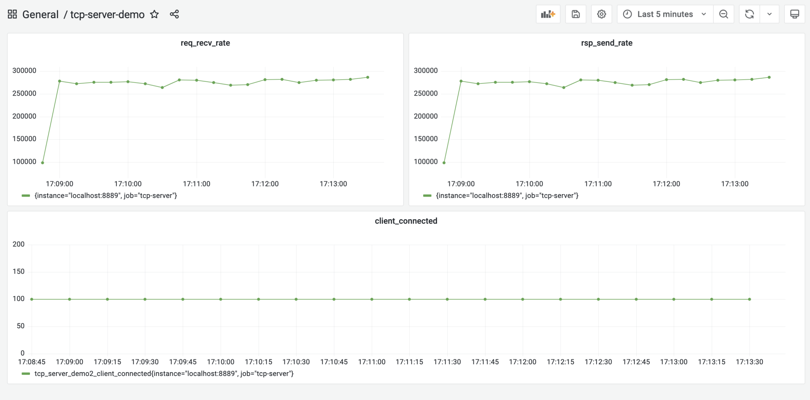
从图中可以看到，优化后的服务端的处理性能提升到27w/s左右，相比于第一版性能基准(18.5w/s)，性能提升了足有45%。
重用内存对象
前面这个带缓存的网络I/O，是我们从CPU性能采样数据中找到的“瓶颈点”。不过，在Go中还有另外一个十分重要的性能指标，那就是堆内存对象的分配。
因为Go是带有垃圾回收（GC）的语言，频繁的堆内存对象分配或分配较多，都会给GC带去较大压力，而GC的压力显然会转化为对CPU资源的消耗，从而挤压处理正常业务逻辑的goroutine的CPU时间。
下面我们就来采集一下tcp-server-demo2-with-pprof目录下的server的内存分配采样数据，看看有没有值得优化的点。
这次我们直接使用go tool pprof的命令行采集与交互模式。在启动server和client后，我们手工执行下面命令进行内存分配采样数据的获取：
$ go tool pprof http://192.168.10.18:6060/debug/pprof/allocs
Fetching profile over HTTP from http://192.168.10.18:6060/debug/pprof/allocs
Saved profile in /root/pprof/pprof.server.alloc_objects.alloc_space.inuse_objects.inuse_space.001.pb.gz
File: server
Type: alloc_space
Time: Jan 23, 2022 at 6:05pm (CST)
Entering interactive mode (type "help" for commands, "o" for options)
数据获取到后，我们就可以使用go tool pprof提供的命令行交互指令，来查看各个函数的堆内存对象的分配情况，其中最常用的一个指令就是top，执行top后，我们得到如下结果：
(pprof) top
Showing nodes accounting for 119.27MB, 97.93% of 121.79MB total
Dropped 31 nodes (cum <= 0.61MB)
Showing top 10 nodes out of 30
flat flat% sum% cum cum%
38MB 31.20% 31.20% 43.50MB 35.72% github.com/bigwhite/tcp-server-demo2/packet.Decode
28.50MB 23.40% 54.61% 28.50MB 23.40% github.com/bigwhite/tcp-server-demo2/frame.(*myFrameCodec).Decode
18MB 14.78% 69.39% 79MB 64.87% main.handlePacket
17.50MB 14.37% 83.76% 17.50MB 14.37% bytes.Join
9MB 7.39% 91.15% 9MB 7.39% encoding/binary.Write
5.50MB 4.52% 95.66% 5.50MB 4.52% github.com/bigwhite/tcp-server-demo2/packet.(*Submit).Decode (inline)
1.76MB 1.45% 97.11% 1.76MB 1.45% compress/flate.NewWriter
1MB 0.82% 97.93% 1MB 0.82% runtime.malg
0 0% 97.93% 1.76MB 1.45% bufio.(*Writer).Flush
0 0% 97.93% 1.76MB 1.45% compress/gzip.(*Writer).Write
top命令的输出结果默认按flat(flat%)列从大到小的顺序输出。flat列的值在不同采样类型下表示的含义略有不同。
在CPU类型采样数据下，它表示函数自身代码在数据采样过程的执行时长；在上面的堆内存分配类型采样数据下，它表示在采用过程中，某个函数中堆内存分配大小的和。而flat%列的值表示这个函数堆内存分配大小占堆内存总分配大小的比例。
从上面的输出结果来看，packet.Decode函数排在第一位。那么，现在我们就来深入探究一下Decode函数中究竟哪一行代码分配的堆内存量最大。我们使用list命令可以进一步进入Decode函数的源码中查看：
(pprof) list packet.Decode
Total: 121.79MB
ROUTINE ======================== github.com/bigwhite/tcp-server-demo2/packet.Decode in /root/baim/tcp-server-demo2-with-pprof/packet/packet.go
38MB 43.50MB (flat, cum) 35.72% of Total
. . 75: case CommandConn:
. . 76: return nil, nil
. . 77: case CommandConnAck:
. . 78: return nil, nil
. . 79: case CommandSubmit:
38MB 38MB 80: s := Submit{}
. 5.50MB 81: err := s.Decode(pktBody)
. . 82: if err != nil {
. . 83: return nil, err
. . 84: }
. . 85: return &s, nil
. . 86: case CommandSubmitAck:
(pprof)
我们看到，s := Submit{}这一行是分配内存的“大户”，每次服务端收到一个客户端submit请求时，都会在堆上分配一块内存表示Submit类型的实例。
这个在程序关键路径上的堆内存对象分配会给GC带去压力，我们要尽量避免或减小它的分配频度，一个可行的办法是尽量重用对象。
在Go中，一提到重用内存对象，我们就会想到了sync.Pool。简单来说，sync.Pool就是官方实现的一个可复用的内存对象池，使用sync.Pool，我们可以减少堆对象分配的频度，进而降低给GC带去的压力。
我们继续在tcp-server-demo3的基础上，使用sync.Pool进行堆内存对象分配的优化，新版的代码放在了tcp-server-demo3-with-syncpool中。
新版代码相对于tcp-server-demo3有两处改动，第一处是在packet.go中，我们创建了一个SubmitPool变量，它的类型为sync.Pool，这就是我们的内存对象池，池中的对象都是Submit。这样我们在packet.Decode中收到Submit类型请求时，也不需要新分配一个Submit对象，而是直接从SubmitPool代表的Pool池中取出一个复用。这些代码变更如下：
// tcp-server-demo3-with-syncpool/packet/packet.go
var SubmitPool = sync.Pool{
New: func() interface{} {
return &Submit{}
},
}
func Decode(packet []byte) (Packet, error) {
commandID := packet[0]
pktBody := packet[1:]
switch commandID {
case CommandConn:
return nil, nil
case CommandConnAck:
return nil, nil
case CommandSubmit:
s := SubmitPool.Get().(*Submit) // 从SubmitPool池中获取一个Submit内存对象
err := s.Decode(pktBody)
if err != nil {
return nil, err
}
return s, nil
case CommandSubmitAck:
s := SubmitAck{}
err := s.Decode(pktBody)
if err != nil {
return nil, err
}
return &s, nil
default:
return nil, fmt.Errorf("unknown commandID [%d]", commandID)
}
}
第二处变更是在Submit对象用完后，归还回Pool池，最理想的“归还地点”是在main包的handlePacket函数中，这里处理完Submit消息后，Submit对象就没有什么用了，于是我们在这里将其归还给Pool池，代码如下：
// tcp-server-demo3-with-syncpool/cmd/server/main.go
func handlePacket(framePayload []byte) (ackFramePayload []byte, err error) {
var p packet.Packet
p, err = packet.Decode(framePayload)
if err != nil {
fmt.Println("handleConn: packet decode error:", err)
return
}
switch p.(type) {
case *packet.Submit:
submit := p.(*packet.Submit)
submitAck := &packet.SubmitAck{
ID: submit.ID,
Result: 0,
}
packet.SubmitPool.Put(submit) // 将submit对象归还给Pool池
ackFramePayload, err = packet.Encode(submitAck)
if err != nil {
fmt.Println("handleConn: packet encode error:", err)
return nil, err
}
return ackFramePayload, nil
default:
return nil, fmt.Errorf("unknown packet type")
}
}
改完这两处后，我们的内存分配优化就完成了。
和前面一样，我们构建一下tcp-server-demo3-with-syncpool目录下的服务端，并使用客户端对其进行一次压测，压测几分钟后，我们就能看到如下的结果：
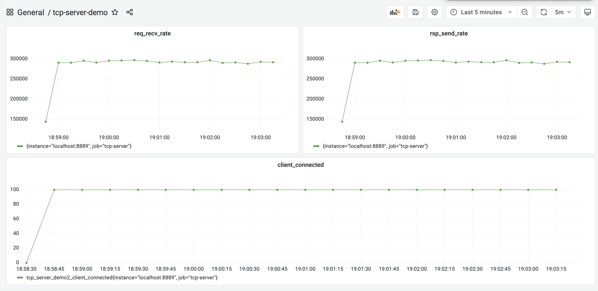
从采集的性能指标来看，优化后的服务端的处理能力平均可以达到29.2w/s，这相比于上一次优化后的27w/s，又小幅提升了8%左右。
到这里，按照我们在这一讲开头处所讲的性能优化循环，我们已经完成了一轮优化了，并且取得了不错的效果，现在可以将最新的性能指标作为新一版的性能基准了。
至于是否要继续新一轮的优化，这就要看当前的性能是否能满足你的要求了。如果满足，就不需再进行新的优化，否则你还需要继续一轮或几轮优化活动，直到性能满足你的要求。
小结
好了，今天的课讲到这里就结束了，现在我们一起来回顾一下吧。
在这一讲中，我们重点讲解了如何针对上一讲实现的第一版服务端进行优化。我们给出了Go程序优化的四步循环方法，这四步依次是建立性能基准、性能剖析、代码优化和与性能基准比较，确定优化效果。如果经过一轮优化，Go应用的性能仍然无法达到你的要求，那么还可以按这个循环，进行多轮优化。
建立性能基准是整个优化过程的前提，基准提供了性能优化的起点与参照物。而建立性能基准的前提又是建立观测设施。观测设施的建立方法有很多，这里我们基于Prometheus+Grafana的组合，实现了一个可视化的观测平台。基于这个平台，我们为第一版服务端实现建立了性能基准。
另外，剖析Go应用性能有很多工具，而Gopher的最爱依然是Go原生提供的pprof，我们可以以图形化的形式或命令行的方式，收集和展示获取到的采样数据。针对我们的服务端程序，我们进行了带缓冲的网络I/O以及重用内存对象的优化，取得了很不错的效果。
思考题
这一讲中，虽然我们对第一版服务端实现实施了两个有效的优化，但这个程序依然有可优化的点，你不妨找找，看看还能在哪些点上小幅提升服务端的性能。
欢迎你把这节课分享给感兴趣的朋友。我是Tony Bai，我们下节课见。
© 2019 - 2023 Liangliang Lee. Powered by gin and hexo-theme-book.